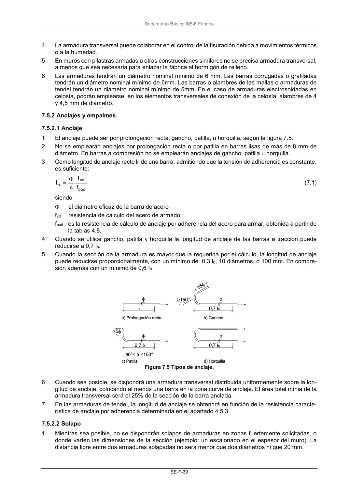

DB-SE-F · 7.5.2.2 Solapo · versión 2019-12-20 · capa oficial
Formatos: JSON compacto · Markdown · PDF fuente
Ámbito del documento · texto del ámbito · documento y tablas
ID técnico a0094 · PDF pág. 43-44 · jerarquía no validada por persona · contrastado con el literal de la página 43 (candidato tipográfico); no validado por persona · padre: raíz
7.5.2.2 Solapo 1 Mientras sea posible, no se dispondrán solapos de armaduras en zonas fuertemente solicitadas, o donde varíen las dimensiones de la sección (ejemplo: un escalonado en el espesor del muro). La distancia libre entre dos armaduras solapadas no será menor que dos diámetros ni que 20 mm. Documento Básico SE-F Fábrica SE-F-40 2 La longitud de solapo en las armaduras de tendel se podrá obtener en función del resultado de los ensayos realizados para obtener su longitud de anclaje.

PDF fuente redistribuible: copia fiel enlazada en esta página (SHA256 verificado).